Ordine degli Ingegneri della Provincia di Vicenza
Commissione ICT
PANORAMICA
DALL'ERGONOMIA COGNITIVA ALLO USER EXPERIENCE DESIGN
PER UNA PROGETTAZIONE CENTRATA SULL'UTENTE
5 Luglio 2014
Relatore Marco Dussin / @marcodussin
Qualcosa su di me
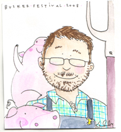Front and back end engineer
http://www.duss.in
marco@duss.in
@marcodussin
it.linkedin.com/in/marcodussin/
Che cosa sto leggendo ora
Qualcosa su di voi
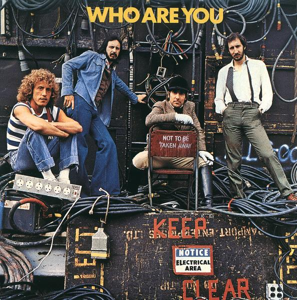Qualcosa sul corso
Panoramica
dall'ergonomia cognitiva
allo user experience design
per una progettazione
centrata sull’utente
| Argomento | Pomodori |
|---|---|
| Introduzione | 1 |
| Ergonomia cognitiva secondo Norman | 2 |
| Sistemi interattivi e architettura dell'informazione | 1 |
| UX design | 1 |
| Emotional design | 1 |
| Progettazione UX | 1 |
| Varie, domande, blablabla | 1 |
| Totale | 8 |
Mostri contro Alieni
Parliamo di citofoni
...anzi, disegnamoli!
Ergonomia
Il termine "Ergonomia" è stato usato per la prima volta da Wojciech Jastrzębowski in un giornale polacco nel 1857
Ergonomia: dal greco érgon (lavoro) e ńomos (regola, legge)
Nel 1949 lo psicologo K. F. H. Murrell diede al termine il significato attuale:
...è quella scienza che si occupa dell'interazione tra gli elementi di un sistema (umani e d'altro tipo) e la funzione per cui vengono progettati (nonché la teoria, i principi, i dati e i metodi che vengono applicati nella progettazione), allo scopo di migliorare la soddisfazione dell'utente e l'insieme delle prestazioni del sistema I.E.A. (International Ergonomics Association)
Science Finds, Industry Applies, Man Conforms (La scienza scopre. L'industria applica. L'uomo si adegua)Motto della Chicago World's Fair del 1933

Integrated Safety Management, Berkeley Lab
...mentre tutti diamo la colpa a noi stessi, il vero responsabile – il cattivo design – passa inosservato. E' l'ora di cambiare”Don Norman 1996
Ergonomia
cognitiva
L'ergonomia cognitiva ha come oggetto di studio l'interazione tra il sistema cognitivo umano e gli strumenti per l'elaborazione di informazione. La conoscenza prodotta da questo studio è utilizzata per supportare la progettazione di strumenti appropriati per i più svariati usi, dal lavoro, all'educazione, al divertimentoSocietà Europea di Ergonomia Cognitiva

Donald Norman: La caffettiera del masochista. Psicopatologia degli oggetti quotidiani, Giunti, 1988
I principi che un buon design dovrebbe seguire sono:
- fornire visibilità;
- fornire un buon mapping;
- fornire inviti e vincoli all'uso;
- fornire feedback;
- fornire consistenza;
- fornire un buon modello concettuale.
Fornire
visibilità
Esercizio: "la mia automobile"
Fornire visibilità (1)
Tutte le parti funzionali devono essere visibili e devono fornire il messaggio corretto su quello che si può fare
Fornire visibilità (2)
Le relazioni tra ciò che vogliamo fare e le parti dell'oggetto su cui agire devono essere evidenti.
Fornire visibilità (3)
Il numero delle funzioni disponibili non deve superare eccessivamente il numero dei comandi utilizzabili
 Homepage di Google.it
Homepage di Google.it
Fornire un buon
mapping
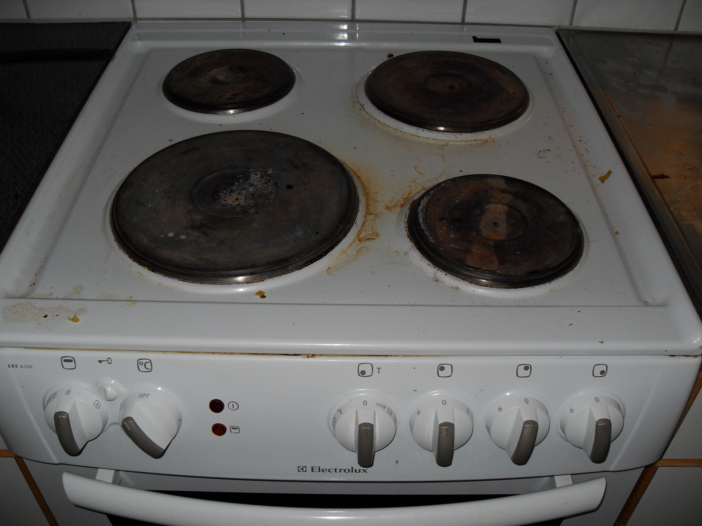Esercizio: "i miei fornelli"
Fornire un buon mapping (1)
Mapping significa correlazione tra la configurazione dei comandi disponibili per un dato oggetto e la configurazione delle parti di tale oggetto in cui si manifestano i risultati prodotti
Fornire un buon mapping (2)
...senza obbligare l'utente a sforzi mnemonici o a procedere "per tentativi"
Powerseat di una Mercedes-Benz E320 BLUETEC del 2008
Fornire un buon mapping (3)
Bisogna prestare particolare attenzione ai modelli culturali consolidati degli utenti
Fornire
inviti e vincoli all’uso
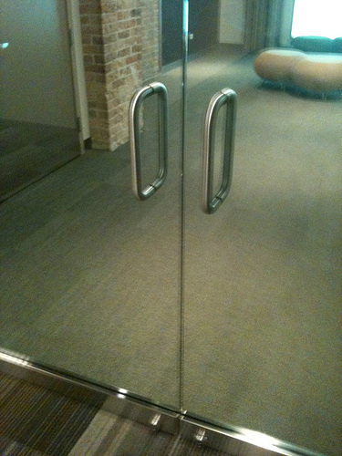Esercizio: "la mia porta"

Fornire inviti e vincoli all’uso (1)
- Inviti (affordance): sono proprietà concrete e reali dell'oggetto che invitano l'utente ad utilizzarlo in un certo modo
- Vincoli (constraints): sono proprietà concrete o funzionalità progettate in modo tale da vincolare l'utente ad un dato uso dell'oggetto
Forbice Professionale K-Active Taping
Fornire inviti e vincoli all’uso (2)
Vincoli e inviti possono essere fisici, semantici, culturali o logici
Fornire
feedback
Esercizio: "il mio interruttore della luce"
Fornire feedback (1)
Pemettere all'utente di capire immediatamente, in modo sincronizzato, quale conseguenza ha seguito la sua azione, perchè possa verificare se è stata effettuata secondo le sue aspettative.
Se l'azione non può essere percepita, sono buoni sostituti a tale percezione i suoni, i colori, i cambiamenti di forma negli oggetti...
Fornire
consistenza
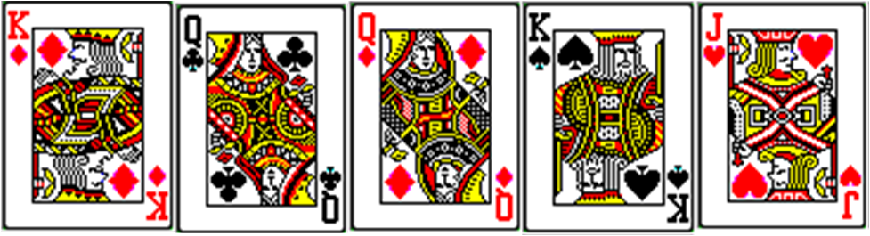Esercizio: "le carte da gioco"
Fornire consistenza (1)
Progettare interfacce affinchè permettano simili operazioni ed utilizzino comandi simili per compiere compiti simili.
Permette all'utente di trasferire velocemente la conoscenza già acquisita a nuovi contesti e concentrarsi quindi sulle operazioni di rilievo.
Può essere controproducente.
Fornire consistenza (2)
Ci sono 4 tipi di consistenza:
- estetica (es: riconoscere una "Mercedes" da una "BMW")
- funzionale (es: i colori del semaforo)
- interna (es: le segnalazioni dei sentieri di montagna)
- esterna (es: le interfacce dei programmi per un dato sistema operativo)
Fornire un buon
modello concettuale
Esercizio: "il mio termostato"
Fornire un buon modello concettuale (1)
Interagendo con un sistema (software o di altro tipo), una persona si costruisce nella testa un concetto mentale di che cosa il sistema e i suoi componenti siano, che proprietà abbiano e quali siano le interazioni possibili con essi. E' quindi la struttura delle convinzioni che una persona ha rispetto al modo in cui funziona una certa cosa.
I principi che un buon design dovrebbe seguire sono:
- fornire visibilità;
- fornire un buon mapping;
- fornire inviti e vincoli all'uso;
- fornire feedback;
- fornire consistenza;
- fornire un buon modello concettuale.
Allora come mai spesso le persone preferiscono agli oggetti semplici quelli
complessi?
Complesso
vs
confuso
Abbiamo bisogno di complessità anche quando desideriamo semplicità
Esercizio: le funzioni del cellulare
La complessità è desiderata
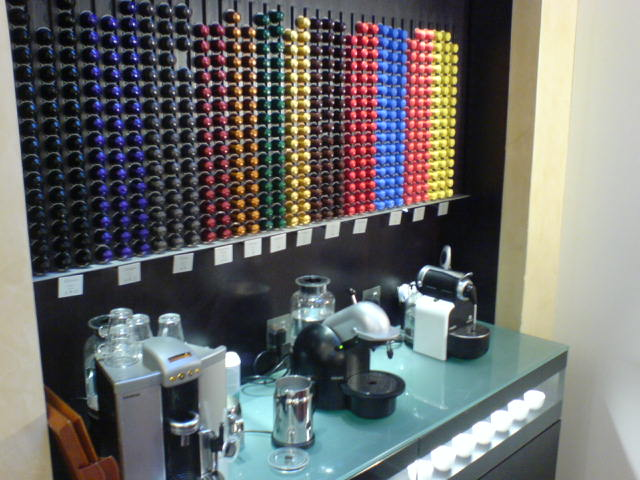La complessità è cerimonia e rituale, e il rituale dà il senso di appartenenza a una data cultura
La complessità è accettata comunemente
- Orologio
- Alfabeto
- Musica
E' compito del progettista dare alle persone modelli concettuali appropriati.
Ad esempio nel computer:
- File
- Album fotografico
- Mappa
La differenza tra una cosa semplice ed una complessa sta nel
modello concettuale del suo funzionamento
possieduto da chi la usa
La complessità totale di un sistema è costante: se si semplifica l'interazione per la persona aumenta la complessità dietro alle quinte.Larry Tesler (Apple) - Legge di Tesler della conservazione della complessità
Sistemi interattivi
Comunicazione tra essere umano e un sistema (ad esempio un computer: HCI)
Lo scopo è la progettazione e lo sviluppo di sistemi interattivi che siano usabili, affidabili e che supportino e facilitino le attività umane.
Modelli di interazione (1)
Donald Norman stabilisce 7 stadi dell'azione:
- L'utente stabilisce lo scopo
- L'utente formula l'intenzione
- L'utente specifica le azioni da compiere tramite l'interfaccia
- Il sistema esegue l'azione
- L'utente percepisce lo stato del sistema
- L'utente interpreta lo stato del sistema
- L'utente valuta lo stato del sistema rispetto allo scopo
Esecuzione e valutazione sono in un loop continuo
Modelli di interazione (2)
Secondo Norman alcuni sistemi sono più difficili da usare di altri perchè ci si trova ad annaspare nell'attraversare:
- il golfo dell'esecuzione: quando la formulazione delle azioni da parte dell'utente non coincide con le azioni permesse dal sistema
- il golfo della valutazione: quando le aspettative di cambiamento sullo stato del sistema da parte dell'utente sono diverse dallo stato raggiunto dal sistema stesso
Modelli di interazione (3)
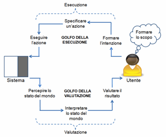Modelli di interazione (4)
Gli psicologi, come James Reason, che hanno tenuto dei cosiddetti "diari cognitivi" di ogni proprio errore, anche il più banale, hanno messo in evidenza come commettiamo errori sistematicamente e quotidianamente.
Modelli di interazione (5)
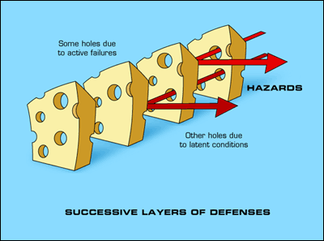 James Reason: modello del formaggio svizzeroModelli di interazione (6)
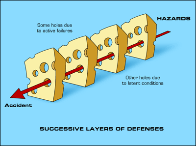 James Reason: modello del formaggio svizzeroModelli di interazione (7)
Possiamo distinguere tra due tipi di errore:
-
SLIP:
l'utente ha capito correttamente il sistema e il suo scopo, ha formulato correttamente l'azione ma ha compiuto poi una azione sbagliata (oppure la ha omessa, nel qual caso si usa anche il termine LAPSE). Sono errori di esecuzione di una azione corretta. MISTAKE:
l'utente e il sistema non riescono ad avere lo stesso scopo. Sono gli errori dovuti ad una azione non appropriata, anche se potenzialmente corretta.
"Slips result from automatic behavior... Mistakes result from conscious deliberations" [D. Norman]
Gli slip sono errori di esecuzione, mentre i mistake sono errori di pianificazione. Lo slip può essere risolto con un migliore design dell'interfaccia, il mistake con una migliore comprensione del sistema.
Capture Slip: andare al lavoro di sabato anzichè a casa
Omission Slip: non spedire una mail lasciata in sospeso
Loss of Activation Slip: scendere in garage e non ricordare perchè
Description Slip: strisciare la carta di credito nella porta dell'albergo anzichè la chiave
Associative Activation Slip: cercare di fare lo zoom con due dita sul vecchio tom tom
Perceptual Confusion Slip: lavarsi le mani con il gel per capelli
Reverse Schema Slip: buttare il portafoglio e tenere lo scontrino
Cross-talk Slip: iniziare un documento in inglese e finirlo in italiano
Modelli di interazione (8)
Un luogo comune da sfatare è che rendendo le tecnologie che usiamo sempre più pervasive e automatiche, ci proteggiamo dai rischi di errori. Ci sono delle situazioni, per le quali la psicologa Lisanne Baindbridge ha coniato il termine di «ironie dell'automazione» [http://j.mp/ironies], dove può accadere il contrario.
Stili di interazione
- Interfacce a controllo vocale
- Look... Es: sistemi WIMP (windows, icons, menus, and pointer)
- ...and feel Es: Windows vs Mac vs Linux
- Multitouch
Gli stili di interazione sono strettamente legati ai modelli. Assieme sono la colla che tiene uniti i sistemi, definendo il modo in cui tutti i sottosistemi si relazionano l'un l'altro.
Ad esempio in MS Word lo stile e modello di interazione è quello di essere davanti ad una macchina da scrivere con un foglio inserito. Si possono fare molte più cose che con una semplice macchina da scrivere, ma il modello sottostante rimane fermamente quello.
Excel riflette il modello di un commercialista che mette in riga e colonna i conti, Powerpoint quello di una serie di lucidi messi sul proiettore uno dopo l'altro.
Come aiutare l'utente?
Don't make me think
Steve Krug / New Riders / 2005 (2nd Edition)1/10: Usabilità significa...
Essere sicuri che qualcosa funzioni per bene, e che una persona di media abilità o esperienza la possa usare per lo scopo per cui suppone sia stata progettata senza esserne inevitabilmente frustrata
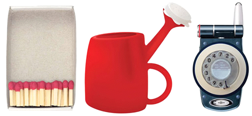Il grado in cui un prodotto può essere usato da particolari utenti per raggiungere certi obiettivi con efficacia, efficienza, soddisfazione in uno specifico contesto d’usoDefinizione ISO 9421
La capacità di un sistema di essere compreso, appreso, utilizzato e attraente per gli utenti quando usato sotto condizioni specificateISO/IEC 2001a
2/10: Le applicazioni dovrebbero essere in grado di spiegare se stesse
In modo evidente ed autoesplicativo
3/10: Non farmi pensare
Il non dedicare abbastanza attenzione da parte del progettista nel rendere le cose "ovvie" mina la fiducia che si instaura tra lui e gli utilizzatori
4/10: Non farmi perdere tempo
Gran parte degli utilizzatori di un applicativo o di un sito web lo fanno perchè il suo utilizzo dovrebbe permettere loro di risparmiare tempo. In particolare gli utilizzatori di un sito web sono continuamente in movimento di pagina in pagina
5/10: Lasciami il pulsante "indietro" del browser
Il pulsante "back" è uno dei più utilizzati e dovrebbe essere usato per permettere all'utente di ritornare sui propri passi in caso di errore in modo agevole e intuitivo
6/10: Sono abitudinario
Quando scopriamo una cosa che funziona, tendiamo a ripeterla. E se anche lo fa in un modo che non è il migliore dei modi, siamo pigri nel cercarne un altro. Ma se ci imbattiamo in una modalità migliore, spesso abbandoniamo il modo di fare precedente per sempre
7/10: Non ho tempo da perdere in chiacchiere
Un applicativo dovrebbe permetterci di arrivare subito al sodo, senza troppe smancerie e messaggi roboanti ed euforici
8/10: Non farmi perdere di vista come posso fare una ricerca
Molti utenti preferiscono sempre l'approccio ai sistemi basato sulla ricerca. Sono utenti simili a quelli che, appena entrati in un negozio, hanno bisogno di interpellare subito il primo commesso disponibile
9/10: Lasciami costruire il mio modello concettuale e la mia mappa mentale
Affinchè io possa sempre riprendere il mio cammino da dove ero arrivato e non debba continuamente chiedermi dove si trovano le cose che mi interessano
10/10: Permettimi di ritornare velocemente a casa, "at home""
Un pulsante sempre visibile che permetta il ritorno all'inizio o alla dashboard trasmette un senso di rassicurazione, perchè non fa mai sentire perso l'utente e gli dà sempre la possibilità, per qualsiasi motivo, di fare un "reset" di ciò che stava facendo
Gov.uk design principles
https://www.gov.uk/designprinciples- Start with needs*
- Do less
- Design with data
- Do the hard work to make it simple
- Iterate. Then iterate again.
- Build for inclusion
- Understand context
- Build digital services, not websites
- Be consistent, not uniform
- Make things open: it makes things better
Start with needs*
*user needs not your needs
Il processo di design deve iniziare identificando, analizzando, pensando ai bisogni di utenti reali, e non attorno al modo in cui il processo è ufficialmente allo stato attuale delle cose
Questi bisogni si analizzano dati alla mano, non facendo assunzioni
NB: ciò che gli utenti chiedono non è detto sia ciò di cui hanno bisogno
Do less
Il nostro sito/servizio dovrebbe fare solo e soltanto ciò che solo il nostro sito/servizio è in grado di fare
Se qualcun'altro lo fa già, linkiamolo
Fornire API è un buon modo per invitare altri a fornire servizi aggiuntivi basati sul nostro
Design with data
Solitamente non partiamo mai da zero, ma da un servizio che ha già utenti e che ci permettono di imparare dal loro modo di fare reale
Il processo di prototipizzazione, sviluppo e rilascio è un ciclo continuo che produce dati dall'analisi "live" degli utenti: questi dati vanno tenuti in considerazione
Do the hard work to make it simple
Far sembrare qualcosa semplice è facile...
...non sempre
Far sembrare qualcosa semplice da usare è ben più difficile, soprattutto se il sistema sotteso è complesso...
ma ci dobbiamo riuscire. Punto.
Iterate. Then iterate again.
Il miglior modo per creare un sito/servizio efficace è di iniziare dal piccolo e, per iterazioni successive, ingrandirsi
Dopo la release del "Minimum Viable Product", questo va testato con utenti reali, di modo che siano i loro feedback a portare alle versioni alpha, beta, ecc.
Build for inclusion
Un prodotto dovrebbe essere il più accessibile, comprensibile, leggibile possibile
Anche a costo di sacrificare l'eleganza
Understand context
I nostri utenti non sono schermi, ma persone.
Che persone sono? Useranno il sito/servizio a casa, al lavoro, in macchina? Su che dispositivi (nuovi, vecchi, mobile)? Cosa sono abituati a usare (Facebook, Twitter...)? O forse sono utenti non abituati a usare un sito/servizio?
Build digital services, not websites
Il servizio che forniamo non si limita al sito in se'.
Dobbiamo tenere in mente l'ecosistema digitale in cui è inserito, e anche quello analogico
Be consistent, not uniform
Quando possibile è bene usare lo stesso linguaggio e gli stessi patterns di design
E quando non è possibile, è bene cercare di mantenere comunque un approccio consinstente
Make things open: it makes things better
Con i colleghi, con gli utenti, con il mondo intero:
ogni occasione è buona per condividere codice, design, idee, intenzioni, fallimenti
Architettura dell'informazione
Storicamente il termine "architetto dell'informazione" è attribuito a Richard Saul Wurman
E' la struttura organizzativa logica e semantica delle informazioni, dei contenuti, dei processi e delle funzionalità di un sistema o un'applicazione informatica.
Comprende l'analisi, la scelta e la progettazione degli strumenti tecnici e culturali per l'organizzazione, la catalogazione, la ricerca, la navigazione e la presentazione di contenuti e dati nei vari formati disponibili (digitali e non).
Non è:
- Graphic design
- Software development
- Usability Engineering
E' però a supporto di:
- Usabilty
- Findability
Cerchiamo di capire cos'è con un piccolo esempio
Il paradosso della scelta in profumeria (vedi trovabile.org)
Tutte le profumerie hanno per lo più il medesimo layout, con i profumi suddivisi generalmente per sesso e poi per marca: ma questo criterio soddisfa solo il cliente che sa già cosa vuole. Per gli altri, specie in presenza di un numero elevato di prodotti, questa organizzazione può tradursi in un vero e proprio paradosso della scelta.
L'obbiettivo di una profumeria è spingere a un acquisto che crei benessere personale permetta di esternare il proprio carattere.
Ma come aiutare l’utente a scegliere il giusto profumo per la sua personalità?
- Come può un cliente che non ha mai comprato un profumo scegliere quello adatto alla sua persona?
- Come può scegliere la marca del suo profumo se non provando tutti i prodotti che offre quel determinato settore?
- Come si può scegliere di regalare un profumo basandosi solo sulla marca?
In un saggio del 2002 Marcia Bates offre una sintesi dei modelli comportamentali di ricerca dell’informazione (information seeking).

La quasi totalità (94%) del nostro bagaglio conoscitivo deriva quindi da una modalità passiva di acquisizione delle informazioni.
Vige cioè il principio del minimo sforzo
La profumeria soddisfa solo gli utenti che fanno "searching", facendo leva sulla "coerenza" della sua classificazione.
Il suo sistema di classificazione non è flessibile. Per esserlo dovrebbe soddisfare tutte le strategie (quella attive e quella passive; quelle consapevoli e quelle non), rispettando se possibile anche al coerenza; e se non è possibile rinunciando a quest’ultima.
È dimostrato che una scelta troppo vasta di prodotti crea una non-scelta: quello che Schwartz chiama appunto paradosso della scelta.
Esercizio: ideare una modalità diversa che aiuti gli utenti più "pigri"
Individuiamo le "persone"
Individuiamo le "faccette"
- famiglia olfattiva: fresco, floreale ecc.
- sesso: uomo, donna
- marca
- prezzo
- novità e offerte
Individuiamo la modalità di interazione
Le infografiche
"Una immagine che spiega qualcosa"
EsempiMappe mentali
Creo un grafico che connette le idee del cliente/utente
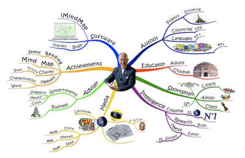ESERCIZIO: Facciamo le "nostre" mappe mentali
ESERCIZIO: Partendo dalla mappa mentale fatta creiamo le personas
ESERCIZIO: Partendo dalle mappe e dalle personas, creiamo una infografica
Big Data Visualization
Datavis - Infovis
User experience design
https://www.facebook.com/note.php?note_id=118951047792
http://www.google.com/about/company/philosophy/
Che cosa è il design?
- Estetica: apparenza, stile, colore, forma...
- Funzionalità: come funziona, come interagiscono le componenti, quanto è efficiente...
- Comprensione: persone, dati, mercato, tendenze, competizione...
- Scopo: profitto, qualità, legame con il passato, felicità...
- Fattibilità: budget finanziario, tempo a disposizione, bisogni effettivi...
Che cosa è il design dell'esperienza utente?
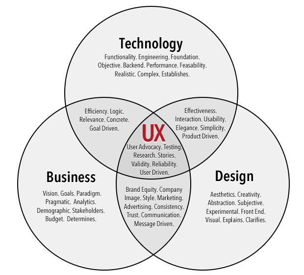Che cosa è il design dell'esperienza utente? (2)
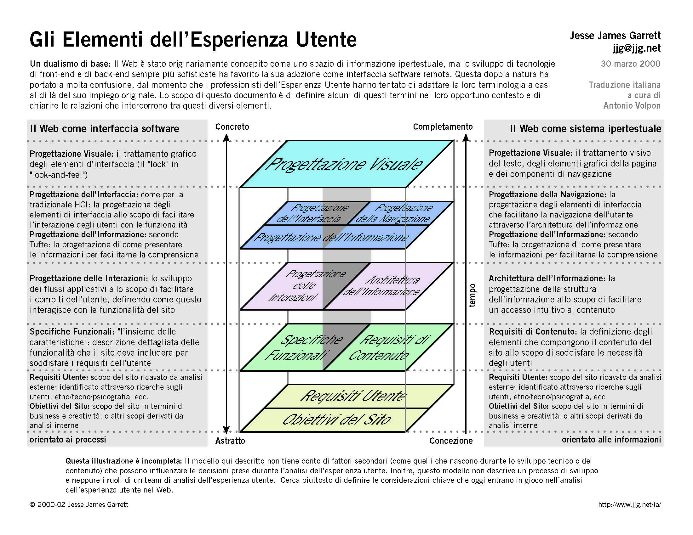Che cosa è il design dell'esperienza utente? (3)
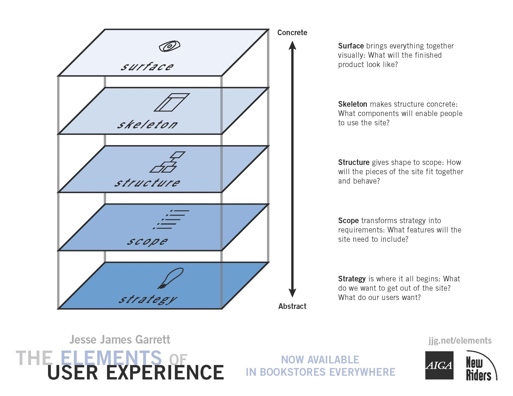Che cosa è il design dell'esperienza utente? (4)

Chrome Web Lab, Science Museum, London
Di cosa si occupa un UX designer
Accessibilità
"Facile da usare", "con un facile accesso alle informazioni"
Scienza del comportamento
Scienze cognitive
Puoi insegnare all'utente il modo migliore per usare il tuo software?
Puoi modellare il comportamento dell'utente per trarne il maggior profitto possibile per te, per lui o per entrambi?
Best practices
Sono gli "standard", sono cose già ben collaudate e provate, che permettono di non reinventare ogni volta la ruota
Brand equity
E' il peso portato dal tuo brand, e che ti permette di instaurare un rapporto di fiducia con i tuoi utenti
Prototipazione
- Wireframe. Niente click. Niente mouse. Niente colori. Serve a focalizzarsi sul contesto
- Mockup (poco più di un wireframe, ma con un minimo di interazione. Non dà ancora ideee su colori e stili)
- Prototipi a bassa fedeltà (HTML, frammenti di codice e stili per i test di colore e dimensioni)
- Prototipi ad alta fedeltà (JPG, PDF, HTML+Bootstrap+JQuery, ecc ecc)
Architettura dell'informazione
L'architettura dell'informazione si focalizza sulle strutture.
Lo user experience design si concentra sulle emozioni
Test d'utente
Ricapitolando
Fundamentals of Experience Design{kind=link}
Design emozionale
Le emozioni influenzano in ogni momento il nostro modo di agire e di pensare, condizionando il nostro comportamento. Qualunque cosa facciamo o pensiamo è permeata dalle emozioni, le quali sono inseparabili dal processo cognitivo. Le emozioni modificano anche il modo in cui ci occupiamo e ci relazioniamo con gli oggetti
Design emozionale
E' un concetto centrale nella vita di tutti i giorni
Piramide dei bisogni di Maslow
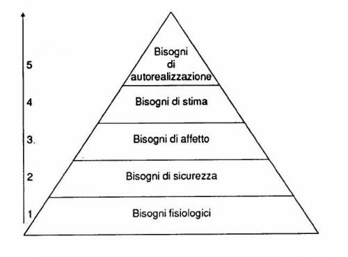Esiste una grandissima varietà di emozioni
Ruota delle emozioni di Robert Plutchik
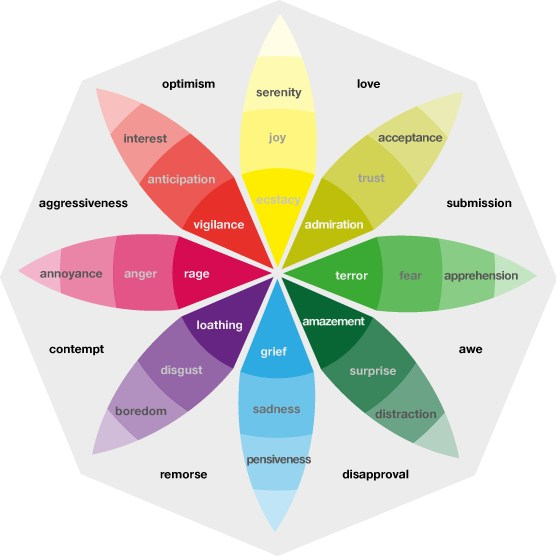Donald Norman: tre livelli emotivi
- viscerale (detto anche reattivo) è un livello automatico dove entrano in gioco i circuiti cerebrali basilari. Le emozioni sono risposte veloci come paura o disgusto. Questo è il livello dell'abitudinarietà, dove il cervello analizza il mondo circostante e vi risponde immediatamente.
Il design viscerale si basa completamente sull'impatto emotivo immediato. Deve offrire una buona sensazione, avere un aspetto gradevole" . E' a livello viscerale che il design deve diventare "caramella per l'occhio"
Donald Norman: tre livelli emotivi
- comportamentale coincide con le attività corporee ed è quello che permette di effettuare operazioni abituali. I processi celebrali coinvolti a questo livello sono quelli che controllano il comportamento quotidiano. E' un livello di azione che lavora in modo non cosciente (è il livello che permette di guidare una macchina e pensare coscientemente a qualcos'altro). In questo livello sono incluse emozioni come frustrazione e noia.
la progettazione grafica deve essere incentrata sull'utente in modo tale da evitare il manifestarsi di frustrazione e rabbia, causate di un design comportamentale mal concepito
Donald Norman: tre livelli emotivi
- riflessivo coinvolge la parte contemplativa del cervello che permette all'uomo di riflettere sul proprio agire. A questo livello agisce la riflessione e avviene l'apprendimento cosciente. Al livello riflessivo appartengono emozioni come orgoglio, imbarazzo e colpa.
Il design riflessivo è completamente legato al messaggio, alla cultura e al significato di un prodotto e del suo impiego. Questo tipo di design riguarda il ricordo ed è legato al prodotto e all'immagine di sé che questo trasmette.
Donald Norman: tre livelli emotivi. Ricapitolando:
- Il livello viscerale è responsabile delle prime impressioni, quelle "a pelle"; nel design corrisponde all'apparenza.
- Il livello comportamentale riguarda l'utilizzo, l'esperienza del prodotto, in tutti i suoi possibili aspetti; nel design corrisponde al piacere ed efficacia d'uso.
- Il livello riflessivo, in ultimo, permette la formazione di un pensiero cosciente, di un'interpretazione e come tale molto permeabile alla cultura, all'educazione e alle differenze individuali; nel design corrisponde all'immagine di sé, alla soddisfazione personale.
Desmet ed Hekkert: i prodotti come stimoli emotivi
- il prodotto come oggetto: le emozioni che ne possono scaturire dipendono dalla sua gradevolezza estetica, dal target di consumatori associato a quel prodotto.
Desmet ed Hekkert: i prodotti come stimoli emotivi
- il prodotto come mezzo: l’oggetto da progettare è percepito come un tramite per ottenere un beneficio (per es.: se compro quella cosa, allora chi mi guarderà mi valuterà positivamente).
Desmet ed Hekkert: i prodotti come stimoli emotivi
- l prodotto come evento: le emozioni derivano dall’anticipazione che il possesso di tale oggetto significa per l’utente consumatore. Il designer si focalizzerà sul rendere l’oggetto desiderabile.
Desmet ed Hekkert: i prodotti come stimoli emotivi, Ricapitolando:
- il prodotto come oggetto: Il designer si concentra sul rendere l’oggetto attraente.
- il prodotto come mezzo:I prodotti devono ottenere prima di tutto l’approvazione e l’ammirazione del consumatore.
- l prodotto come evento: Il designer si focalizza sul rendere l’oggetto desiderabile.
Norman, Desmet ed Hekkert: punti di contatto
- Al design viscerale, corrisponde parzialmente, la valutazione del prodotto come oggetto, dove a fare da padroni sono gli aspetti estetici, in una parola, l’apparenza.
- Al design comportamentale, corrisponde in parte, la valutazione del prodotto come mezzo, dove contano maggiormente lo standard e le convenzioni e le funzionalità attese.
- Il design riflessivo invece trova corrispondenza soprattutto con la valutazione di un prodotto come evento, dove sono importanti l’immagine di sé e lo status sociale che si può acquisire attraverso il prodotto. Le componenti del design riflessivo sono presenti anche nel prodotto come oggetto (la valutazione positiva/negativa dell’oggetto in base al tipo di utenti che ne fa uso) e nel prodotto come mezzo (è importante la valutazione sociale che deriva dal suo utilizzo).
In un esperimento agli inizi degli anni ’90 la psicologa Alice Isen, insieme ad alcuni colleghi, ha dimostrato che lo stato di contentezza espande i processi intellettivi e facilita il pensiero creativo: di fronte alla richiesta di risolvere problemi difficili che richiedevano un modo di pensare insolito, i soggetti reagivano meglio quando avevano appena ricevuto un piccolo dono, sufficiente a farli star bene.
Gli oggetti piacevoli permettono di lavorare meglio, rendono più semplice l'interazione e consentono di ottenere risultati più soddisfacenti.
Ciò è stato dimostrato dagli esperimenti di due scienziati giapponesi, Masaaki Kurosu e Kaori Kashimura, nel 1995 e riconfermato dallo scienziato israeliano Noam Tractinsky nel 1997.
Per una progettazione
LEAN UX
- Problem statement
- Ipotesi
- Outcomes
- Personas
- Features
Centrata sull'utente
La Progettazione centrata sull'utente o in inglese: User-centered design (UCD) è una filosofia di progettazione e un processo nel quale ai bisogni, ai desideri e ai limiti dell'utente sul prodotto finale è data grande attenzione in ogni passo del processo di progettazione per massimizzare l'usabilità del prodotto stesso.fonte: Wikipedia
Il processo è stato definito e descritto da diversi autori e persino da alcune norme ISO, come la 13407, Human-centered design process. Diverse fonti descrivono processi leggermente diversi, ma guidati dalla stessa filosofia: fondare il progetto sulle esigenze degli utenti.
La ISO 13407 stabilisce quattro attività principali per il processo di UCD:
- Specificare il contesto d’uso
- Specificare i requisiti
- Creare delle soluzioni progettuali
- Valutare il design
Nella fase di analisi (1 e 2) tipicamente si compiono le seguenti attività:
- Incontri con gli stakeholder (portatori di interessi) per capire vincoli e aspettative
- Analizzare i prodotti esistenti
- Conduzione di osservazioni sul campo
- Conduzione di interviste con potenziali utenti
- Conduzione di workshop con potenziali utenti
- Questionari
- Creazione di profili di utente
- Creazione di elenchi di compiti
- Creazione di scenari
- Definizione di team multidisciplinari
Nella fase in cui si lavora alla creazione di soluzioni progettuali si usano i seguenti strumenti:
- Brainstorming, riunioni e discussioni libere
- Creazione di modelli e schemi di navigazione
- Creazione di bozzetti e schermate, anche carta e matita
- Conduzione di analisi e simulazioni cognitive sui bozzetti
- Creazione di prototipi a bassa o alta fedeltà
La valutazione avviene prima e durante l’implementazione vera e propria del sistema, attraverso:
- Test con utenti
- Questionari
- Analisi euristiche e ispettive
- Simulazioni cognitive
Ricapitolando: i principi fondamentali della UCD sono:
- Una chiara comprensione dei requisiti, dei bisogni e dei task d'utente (understanding user, goal clarification)
- Incorporare il feedback d'utente per migliorare iterativamente il lavoro svolto attraverso la prototipazione (solution by design)
- Coinvolgere attivamente l'utente nella valutazione del design (user evaluation)
- Integrare lo UCD nelle altre attività di sviluppo affinchè non sia una attività a se stante
Si veda anche http://www.w3.org/WAI/redesign/ucd
Flytoget platform at Oslo
Possiamo vederlo in 6 step
- Definire il gruppo target
- Creare le personas
- Definire gli scenari applicativi
- Definire gli use cases
- Creare prototipi da testare
- Iterare